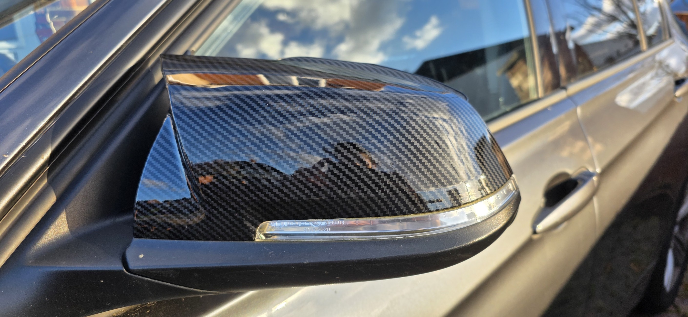
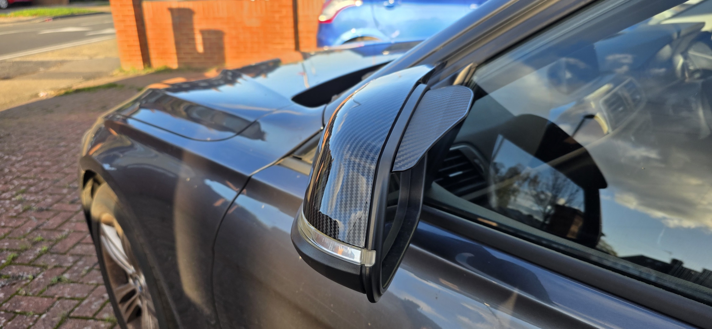
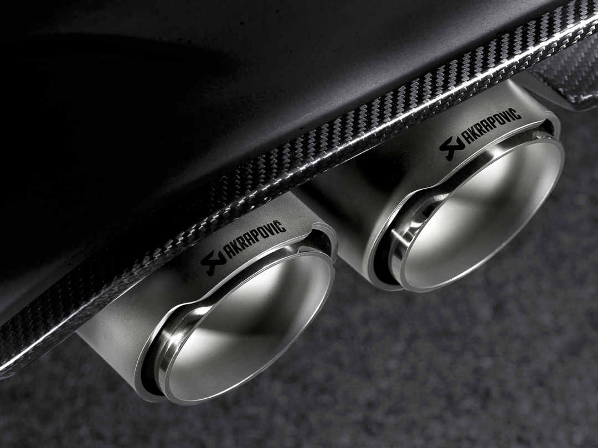
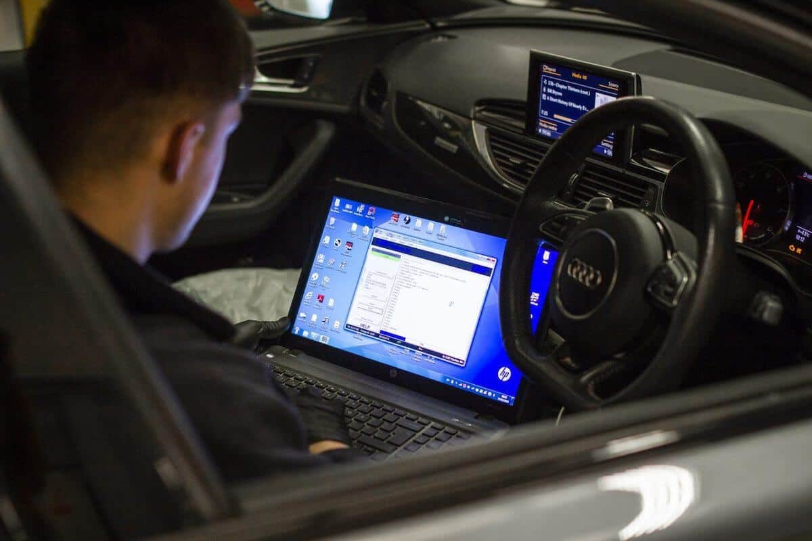
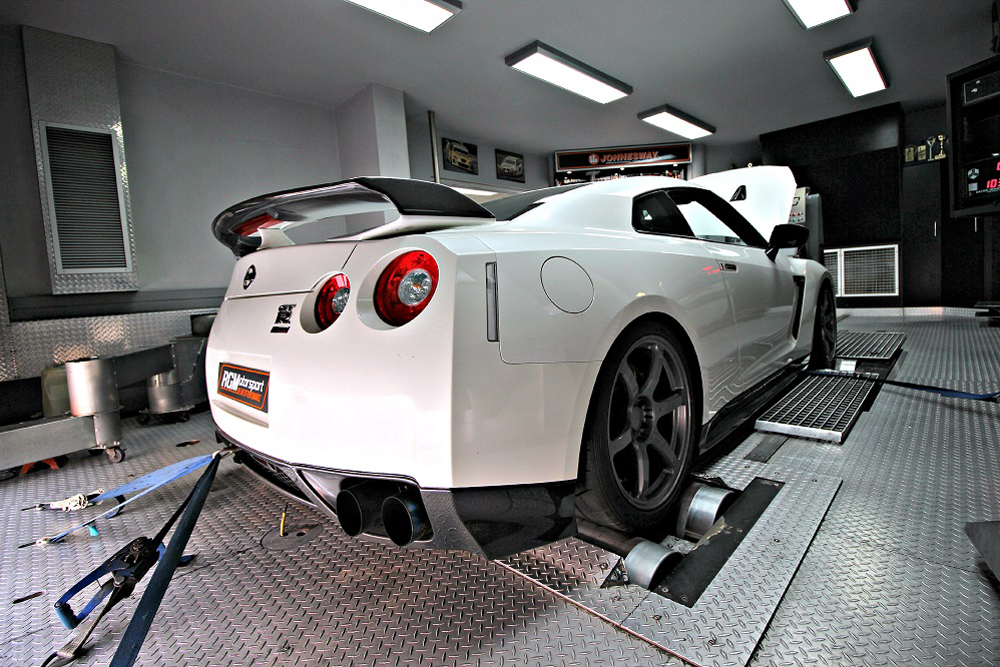

Bumper repair process
Before, during and after proof helps customers understand what a repair enquiry needs.
Bumper repairReal work and service proof
See the type of vehicle work Tuned Performance supports, including bumper repairs, single panel repair and re-spray, carbon mirror caps, diagnostics, BMW/MINI coding, trim fitment, MOT support and remap interest.
Repair proof
For repairs and re-spray enquiries, clear images help confirm whether the job is suitable for a mobile visit or needs a different route.
Before, during and after proof helps customers understand what a repair enquiry needs.
Bumper repairScratches and paint damage are quoted more accurately with close and wider photos.
Panel repair
The service route stays focused on clear repair scope, preparation and finish quality.
Estimate repairStyling and fitment
Use the fitment route for mirror caps, diffusers, exhaust tips, air filters, intakes and selected styling parts.

Close-up fitment photos help confirm finish, access and part condition.
Mirror cap fitment
Wider photos show the vehicle shape and how the part sits after fitment.
Trim fitment
Slip-on styling work is quoted around access, fixing style and part quality.
Exhaust tip fitmentSend part links, engine bay photos and the vehicle details so the fitment route is clear.
Intake fitmentDiagnostics and performance
Diagnostics, MOT support and remap enquiries work best when the first message includes symptoms, warning lights, vehicle details and goals.

Fault scans help narrow down warning lights before parts are ordered.
Book diagnostics
MOT questions can be routed to the right support before the date arrives.
MOT support
Remap enquiries collect the vehicle, engine, current setup and goal first.
Remap enquiry
Performance goals should be discussed before booking any tuning route.
Check remap route
Diffusers need part and vehicle checks before confirming fitting time.
Diffuser fitment
Built for performance-led daily drivers, enthusiast cars and local service enquiries.
Start enquiryHave photos ready?
For the quickest reply, include close-up photos, wider vehicle photos, make, model, location and the best weekday or weekend availability.